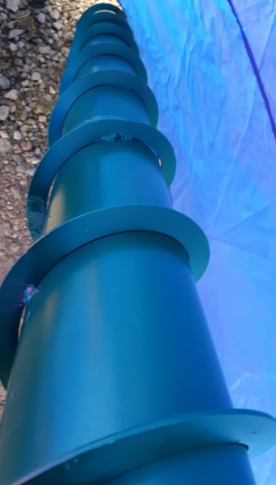

Welcome to Ventiliatorius
Katilo pakuros ventiliatorius, orapūtė RV12R - Automatika24
2020.10.27 08:54
Pereiti prie meniu Pereiti prie turinio Meniu PREKIŲ KATALOGAS Katilines automatika katilų valdikliai Kambario termostatai Valdikliai siurbliams ir vandens paskirstymui Ventiliatoriai, oraputės šildymui Temperatūros reguliatoriai Temperatūros jutikliai Cirkuliaciniai siurbliai Valdikliai saulės kolektoriams Varikliai, motoreduktoriai, pavaros Aliuminio profiliai staklėms Priedai PRISTATYMAS VALDIKLIŲ PALYGINIMAS KONTAKTAI PREKIŲ KATALOGAS Katilines automatika katilų valdikliai Kambario termostatai Valdikliai siurbliams ir vandens paskirstymui Ventiliatoriai, oraputės šildymui Temperatūros reguliatoriai Temperatūros jutikliai Cirkuliaciniai siurbliai Valdikliai saulės kolektoriams Varikliai, motoreduktoriai, pavaros Aliuminio profiliai staklėms Priedai PRISTATYMAS VALDIKLIŲ PALYGINIMAS KONTAKTAI € 0.00 0 prekių Pradžia / Termostatai namams ir jų priedai / Katilo, pečių ventiliatoriai, orapūtės / Katilo pakuros ventiliatorius, orapūtė RV12R
Katilo pakuros ventiliatorius, orapūtė RV12R
€ 37.00
Maitinimo įtampa: 230 V 50 HZ (minimali 100 V). Galia: 80 W. Oro srautas: iki 240 m3/h. Svoris: 2 kg. Garso lygis: iki 60dB. Apsaugos klasė IP 20. Garantija 12 mėnesių.Neturime
Produkto kodas: ventiliatorius RV12R Kategorijos: Katilo, pečių ventiliatoriai, orapūtės , Termostatai namams ir jų priedai Aprašymas Kaip pirkti? KontaktaiAprašymas
Katilo pakuros ventiliatorius, orapūtė RV12R sudaro metalinis korpusas ir rotorius, jie padengti specialiu laku, rotorių suka elektros variklis. Ventiliatorius turi apsauginę sklendę, kuri apsaugo ventiliatorių nuo ugnies pliūpsnių iš katilo, taip pat neleidžia patekti orui į katilą, kai ventiliatorius išjungtas. Sklendę reguliuoti galima su varžtų esančiu ventiliatoriaus šone.
Ventiliatoriaus galia: 80 W.
Oro srautas: iki 240 m3/h (sumažinus ventiliatoriaus apsukas su valdikliu sumažėja ir oro srautas, pajungus ventiliatorių tieisiai į maitinimą jis suksis maksimaliomis apsukomis).
Taip pat galite įsigyti: 75 W ventiliatorius RV14R. Šie ventiliatoriai pagal galingumą ir oro srautą skiriasi minimaliai, todėl galima rinktis tą, kurį lengviau primontuoti prie jūsų katilo.
Valdyti ventiliatoriui: katilo valdikliai
Katilo pakuros ventiliatorius, orapūtė RV12R skirta:
Oro įpūtimui, tiekimui į krosnį ar katilą. Puikiai tinka, kur dėl kamino ar kitų priežasčių oro trauka yra nepakankama. Valdyti degimo procesą mažinant arba didinant oro srautą, taip pat palaikyti nustatytą temperatūrą katile ar patalpose. Tinkamai valdant degimo procesą sutaupoma kuroVentiliatoriaus montavimas prie katilo:
Ventiliatorius yra su tvirtinimo flanšu – jungiamąją dalimi tvirtinimui prie katilo (išmatavimai pateikti nuotraukose). Ventiliatorių prie katilo galima prisukti varžtais. Ventiliatorius gali būti montuojamas tiek įprastai tiek apsukus 180 º, tai įtakos veikimui neturės.
Ventiliatoriaus matmenys ir jungiamoji dalis prie krosnies parodyti nuotraukoje.
Ventiliatoriaus išvaizda gali šiek tiek skirtis negu yra matoma nuotraukose, bet tvirtinimo išmatavimai yra būtent tokie kaip pavaizduota žemiau esančioje nuotraukoje.
Kartu su šiuo ventiliatoriumi gali būti naudojami įvairūs katilo ar ventiliatoriaus valdikliai. Taip pat ventiliatorius gali būti valdomas su įtampos keitikliais reguliatoriais ar įprastais orapūčių valdikliais.
Valdikliai užtikrina, kad ventiliatoriaus naudojimas būtų efektyvus. Reguliuoja sukimosi greitį, o tuo pačiu ir oro srautą patenkantį į katilą. Valdiklis įjungia ventiliatorių prie nustatytos temperatūros, taip pat išjungia ventiliatorių temperatūrai pakilus (neleidžia katilui užvirti) ar temperatūrai sumažėjus. Užgesus katilui išjungia ventiliatorių.
Ventiliatoriaus variklis yra apsaugotas gaubtu ir turi CE atitikties deklaraciją, taip pat dėl paprasto veikimo principo yra patikimas.
Ventiliatoriaus parinkimas katilui:
Ventiliatorius gali būti naudojamas įvairiuose katiluose su įvairių rūšių kuru. Ventiliatorius skirtas iki 35 kW ir mažesnio galingumo katilams (gamintojo rekomendacija). Ventiliatorių galite pasirinkti atsižvelgdami į jūsų katilo gamintojo rekomenduojamą oro srautą ventiliatoriui. Jei keičiate seną ventiliatorių į naują, tuomet galite pasirinkti tokio paties galingumo (oro srauto) ventiliatorių kaip originalus ventiliatorius.
Orapūtės priežiūra:
Įprastomis sąlygomis nereikia nuolatinės priežiūros. Prieš naują šildymo sezoną ar ilgesnį laiką nenaudojus ventiliatoriaus užtenka pašalinti dulkes nuo rotoriaus, taip bus užtikrinamas ilgalaikis veikimas. Jeigu ventiliatorius dirba dulkėtoje aplinkoje ir jo viduje kaupiasi dulkės, tai ventiliatorių reikėtų reguliariai valyti. Nevalytas ventiliatorius turi daug mažesnį oro srauto pralaidumą ir efektyvumą.
Nuoroda į gamintojo puslapį: Ventiliatorius RV12R
Kaip pirkti? Kontaktai
Norint įsigyti prekę spauskite “į krepšelį”, tuomet jus perkels į krepšelio puslapį. Atidžiai peržiūrėkite prekes, kurios yra krepšelyje, galite keisti jų kiekius, ištrinti ar pridėti kitas prekes. Kai prekių krepšelis užpildytas jūsų norimomis prekėmis spauskite “Tęsti atsiskaitymą”. Suveskite reikalingus duomenis ir pasirinkite pristatymą į jūsų norimą LPexpress paštomatą arba jūsų nurodytu adresu. Suvedus visus reikalingus duomenis pasirinkite apmokėjimo būdą ir spauskite apmokėti. Jei pasirinkote apmokėti internetine bankininkyste būsite perkelti į savo banko puslapį, kur turėsite patvirtinti apmokėjimą. Jei pasirinkote apmokėti “Apmokėjimas grynais atsiimant ar kurjeriui pristatant prekę” būsite iškart perkelti į 7 žingsnį “Užsakymas gautas” Puslapis persikraus ir atsiras patvirtinimas, kad užsakymas gautas.Kilus neaiškumams susisiekite:
Telefonu: +370 635 51 579
arba El. paštu: [email protected]
Prekės pristatomos per 1-3 d.d . (Jei prekė yra sandėlyje). Prekės, kurių neturime sandėlyje į krepšeli neleidžiamos įdėti (prie jų nėra mygtuko “į krepšelį” ir matomas užrašas “neturime”). Plačiau apie prekių pristatymą skaitykite: čia
*Dėl prekių pristatymo į Neringos savivaldybę susisiekite El. paštu.
Jums taip pat gali patikti…
15% TOP prekėVentiliatorius, orapūte katilui, krosniai, pečiui RV14R
Akcija! € 34.00 € 29.00 Maitinimo įtampa: 230 V 50 HZ (minimali 100 V). Galia: 75 W. Oro srautas: iki 205 m3/h. Svoris: 2 kg. Maksimalus slėgis: 240 Pa. Garso lygis: iki 62dB. Apsaugos klasė IP 20. Garantija 12 mėnesių. TOP prekėKatilo valdiklis, termostatas – ventiliatoriui, siurbliui
€ 34.00 Valdiklio maitinimas: 230 V / 50 Hz. Temperatūros nustatymo diapazonas: 30 99 °C. Cirkuliacinio siurblio įjungimo diapazonas: 30 60 °C. Tikslumas +/- 1 °C. Temperatūros jutiklio laido ilgis: 1 m. Rele valdyti ventiliatorių: 1 A (iki 0,2 kW). Rele valdyti cirkuliacinį siurblį: 1 A (iki 0,2 kW). Valdiklio išmatavimai: 40 x 70 x 140 mm. Energijos suvartojimas: 2W. Valdiklis pagamintas Lenkijoje. Lietuviškas aprašymas ir meniu (užrašai ant valdiklio). 12 mėnesių gamintojo garantija.Cirkuliacinio siurblio valdiklis IE-21
€ 32.00 – € 40.00 Valdiklio maitinimas: 230 V. Siurblio maitinimas: 230 V. Maitinimo laido ilgis valdikliui ir siurbliui po 1,5 m. Temperatūros jutiklio laido ilgis 1,5 m. Antro jutiklio laido ilgis 2,5 m. Galima prijungti papildomą jutiklį. Rele siurblio valdymui 1 A (0,2 kW). Valdiklis pagamintas Lenkijoje. 12 mėnesių gamintojo garantija. © Automatika24 2020Sukurta naudojant Storefront ir WooCommerce . 0
Kontaktai
[email protected]
+370 635 51 579
Pradžia
Prekių pristatymas Svetainės schema Privatumo politika ir slapukai Prekių grąžinimasPrekių katalogas
Katilines automatika katilų valdikliai Termostatai valdikliai siurbliams ir vandens paskirstymui Katilo, pečių ventiliatoriai, orapūtės Varikliai, motoreduktoriai, pavaros Informuojame, kad siekiant geresnių naršymo sąlygų, šioje svetainėje yra naudojami slapukai (angl. cookies). Supratau Privatumo politika